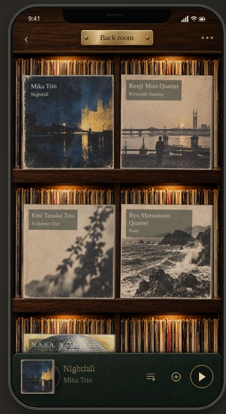
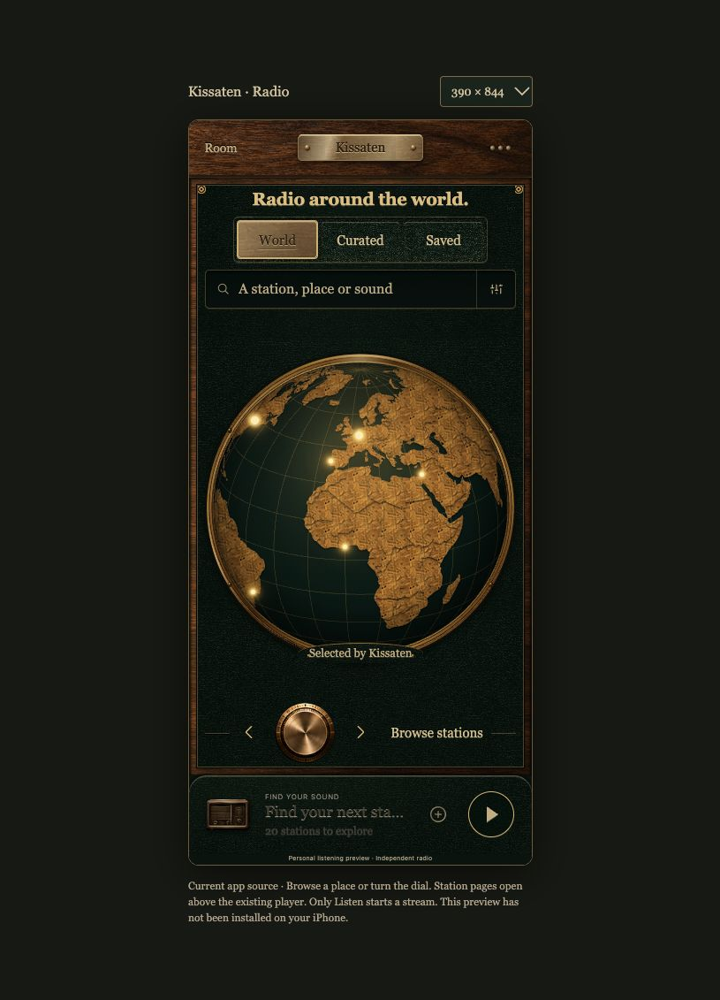
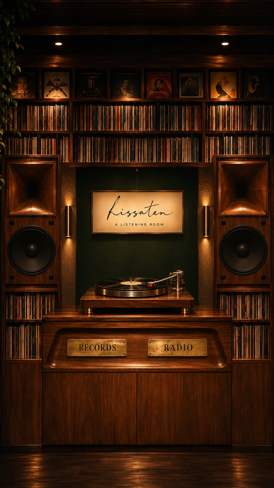

Records on your iPhone
Add recordings from Files, make a playlist and take it offline. Your recordings stay on your iPhone.


Play your own recordings offline and discover independent radio.
Explore the appKissaten isn’t available to download yet.
Add recordings from Files, make a playlist and take it offline. Your recordings stay on your iPhone.

Tune in to a station on the other side of the world.
This preview shows the Radio screen. Stations play in the iPhone app.

Two brass plates beside the turntable. Records takes you to your collection. Radio takes you to live stations.

First-time AltStore setup needs an iPhone, a Mac or Windows computer, a data cable and your Apple Account.
Apps signed with a free Apple Account usually need refreshing about every seven days. Keep AltServer available for the normal computer-assisted route. Automatic and remote renewal aren’t qualified for this beta yet.
Use the help beside each setup step, or email David. Keep an existing installation while troubleshooting; deleting the app can remove recordings.